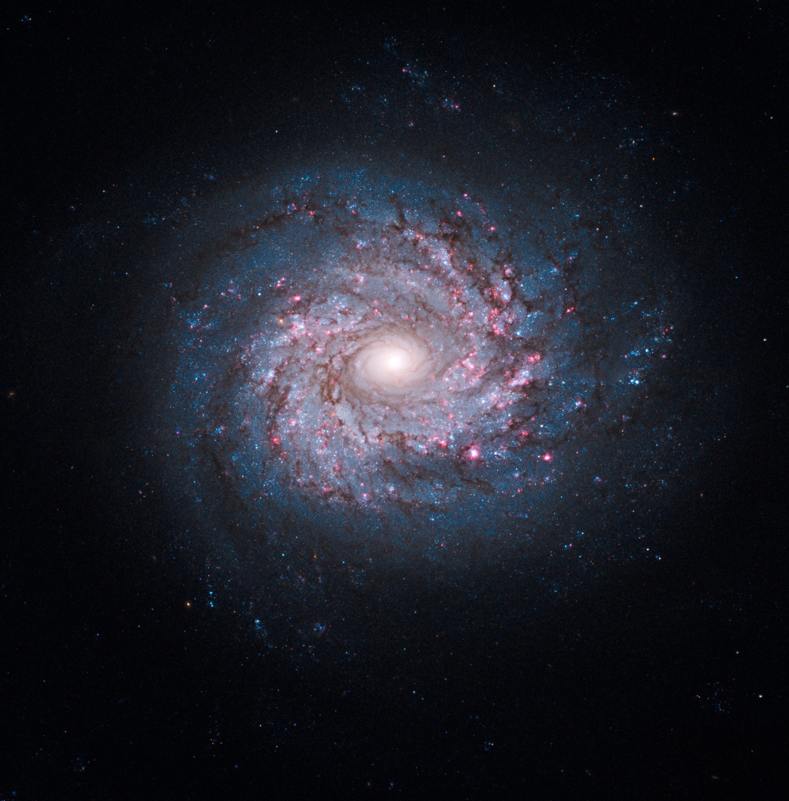

Post #1
NGC 3982, also known as UGC 6918, is an intermediate spiral galaxy approximately 68 million light-years away in the constellation Ursa Major. It was discovered by William Herschel on April 14, 1789 and misclassified as planetary nebula.NGC 3982 is a part of the M109 Group. At an apparent magnitude of 12.0, NGC 3982 needs a telescope to be viewed. Using small telescopes, the galaxy appears as a very faint, diffuse patch of light with its central region appearing as a slightly brighter diffuse ball of light. The galaxy is a part of the M109 group of galaxies.
enviar email